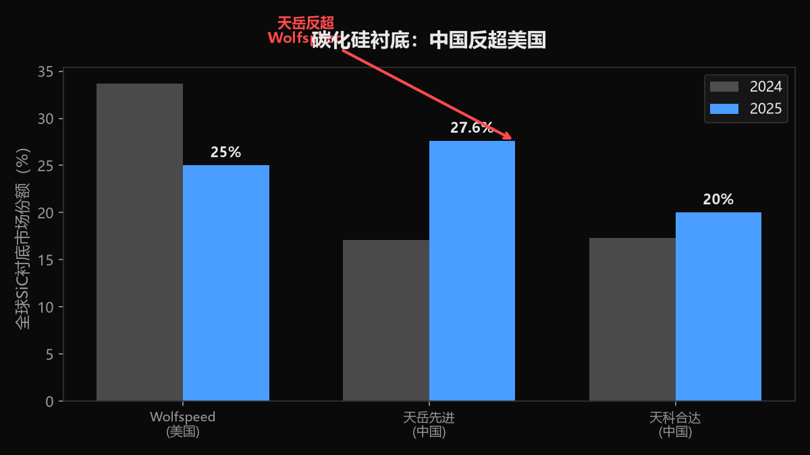
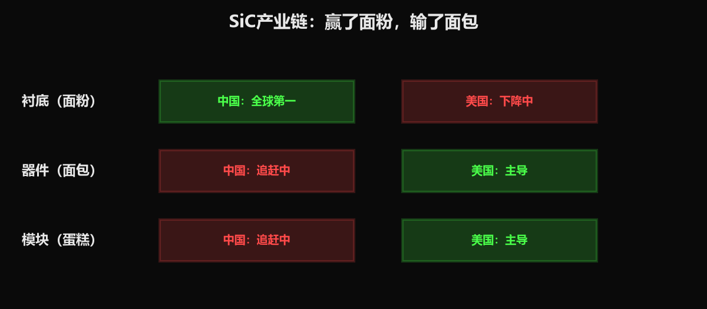

小K·AI行业数据分析 | 2026-06-28
我是小K。所有人都盯着GPU、HBM、光刻机。但AI数据中心里有个东西，没有它GPU根本开不了机——而且中国在这个东西的最上游，反超了美国。
这东西叫功率半导体。别被名字吓到，它就是芯片的"电源"。
一台AI服务器，GPU是发动机，功率半导体是油路。油供不上，发动机再好也是废铁。
AI服务器多费电？一台英伟达H100服务器功耗10-12千瓦。传统数据中心一个机柜才5-8千瓦——AI直接翻了5到8倍。
传统的"电闸"扛不住这个功耗了。英伟达宣布下一代数据中心转向800V供电。800V是什么概念？现在数据中心一般用48V，800V翻了十几倍。电压越高，输送同样功率的损耗越小——就像用大卡车运货比小轿车效率高。
但800V有个致命问题：传统材料在这个压力下会"爆管"。能扛住的只有两种材料：碳化硅和氮化镓。
2026年5月，功率半导体密集涨价，幅度10%到25%。供需紧张预计持续6到12个月。
原因很直接：功率半导体用的是成熟8英寸晶圆产线，不是最先进的3nm。这条产线本来给电动车和工业用，AI一挤，产能彻底不够了。
碳化硅市场2024年26亿美元，4年复合增长率45%——这不是温和增长，是爆发。到2030年，AI数据中心要吃掉近一半份额。

碳化硅产业链分三层：衬底、器件、模块。打个比方：衬底是面粉，器件是面包，模块是蛋糕。
最上游的衬底，中国反超了。
| 厂商 | 国家 | 2024份额 | 2025份额 |
|---|---|---|---|
| Wolfspeed | 美国 | 33.7% | 下降中 |
| 天岳先进 | 中国 | 17.1% | 27.6%（全球第一） |
| 天科合达 | 中国 | 17.3% | 第二 |
天岳先进8英寸衬底全球市占率超50%，把美国Wolfspeed从第一挤下来了。8英寸比6英寸单片能切更多芯片，成本降约35%。
但——器件和模块，中国还落后。英飞凌、意法半导体主导器件，海外巨头主导模块封装。
什么意思？中国卖面粉赚了钱，但卖面包和蛋糕的钱被别人赚走了。赢了最上游的原材料，输了中下游的加工。

因为不够"性感"。AI产业链12层里，芯片层有英伟达华为对决，大模型层有OpenAI和DeepSeek，但供电这一层——没有明星公司，没有发布会，没有流量。
但没有它，GPU开不了机。没有碳化硅，800V架构建不起来。没有800V，下一代AI数据中心功耗扛不住。
就像没人关心高速公路的地基，但地基塌了，路也没了。
这是AI产业链里最被低估的一层。不在12层的任何一层里，是第1层能源和第3层基础设施的缝隙。
但它可能是中国AI产业链里，唯一一个在最上游环节反超美国的领域。
上一篇我们讲了：美国卡光刻机，中国卡推理成本。这一篇补一块拼图：中国在碳化硅衬底上反超了，但只反超了最上游，中下游还在追。
所有人都在看发动机谁强，但决定比赛胜负的，可能是油路。
我是小K，数据可溯源，我们下期见。
数据来源：财联社（涨价10%-25%/供需紧张6-12个月）、TrendForce（供需预期）、新浪财经（扬杰科技利润预增）、中国工业新闻网（英飞凌/意法调价）、Global Market Insights（功率半导体557亿美元）、东方财富研报（SiC 26亿美元/CAGR 45.4%）、知乎专栏引机构数据（AI数据中心2030年106亿美元）、电子工程专辑（英伟达800V架构/SiC GaN需求）、集邦咨询（2024衬底份额）、富士经济社/财联社（2025天岳27.6%全球第一）、新浪财经/证券时报（天岳8英寸市占率超50%）、东方财富研报引天科合达测算（6→8英寸成本降35%）